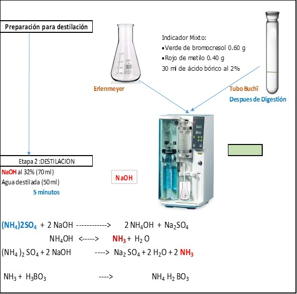

Composición Química de los Alimentos
- Texto relacionado con el ejercicio docente de la asignatura Nutrición Animal Básica
- Composición Química de los Alimentos e Interpretación de resultados
Luz Stella Muñoz Arboleda Profesora Asociada Departamento de Ciencia Animal
¹Nutrición Animal Básica. Profesora Luz Stella Muñoz Arboleda. Departamento de Ciencia Animal
Abreviaturas
Las siguientes abreviaturas han sido utilizadas en las tablas.
En las tablas, los contenidos de nutrientes están expresados en materia seca
| Abreviatura | Descripción y Unidad |
|---|---|
| MS | Materia seca (%) |
| MSi | MS inicial Muestra seca a 60°C. (%) |
| MSa | MS analítica muestra seca a 105°C. (%) |
| MSt | MS total (MSi x MSa)/100. (%) |
| Cenizas | Minerales. (%) |
| MO | Materia Orgánica =100 - % cenizas. (%) |
| EE | Extracto Etéreo (%) |
| PC - | Proteína Cruda = N x 6.25 |
| FDN | Fibra Detergente Neutra. /%) |
| FDA | Fibra Detergente Ácida. (%) |
| LDA | Lignina Detergente Ácida. (%) |
| EB | Energía Bruta (cal/g MS) |
ASPECTOS A TENER EN CUENTA PARA LOS ANALISIS DE COMPOSICION QUIMICA DE LOS ALIMENTOS E INTERPRETACIÓN DE RESULTADOS DE LABORATORIO¹
Todos los alimentos están compuestos por dos elementos: Agua y Materia Seca. La proporción de cada uno de estos, dependerá del tipo de alimento, es decir habrá alimentos con mayor contenido de agua que otros, en la tabla 1 se presentan ejemplos relacionados con la cantidad de agua y materia seca de algunas materias primas (alimentos) utilizados en alimentación animal.
Tabla 1. Contenidos de agua y materia seca - MS de alimentos utilizados en alimentación animal
| Alimentos | Agua - Humedad (%) | MS (%) |
|---|---|---|
| Forrajes verdes¹ | 70-95 | 5-30 |
| Henos¹ | 15-20 | 80-85 |
| Concentrados comerciales¹ | 6-10 | 90-94 |
| Semillas de cereales² | 9-14 | 86-91 |
| Tortas de oleaginosas² | 8-12 | 88-92 |
Información tomada de análisis realizados en el laboratorio de Nutrición Animal en la asignatura Nutrición Animal Básica. Sauvant et al., 2002.
En este grupo de materias primas, se encuentran unas con altos contenidos de humedad y poca materia seca (Forrajes Verdes) y otras con bajos contenidos de humedad y alta materia seca.
Figura 1. Los forrajes contienen menos materia seca (MS) que los granos. Dibujo de Martínez Lasso (2018)¹. ¹ Estudiante Ingeniería Agronómica
Los henos, concentrados comerciales, semillas de cereales y tortas de oleaginosas, por su alto contenido de materia seca, se les puede llamar materias primas concentradas.
Forrajes verdes: Los contenidos de agua de un forraje verde dependen en gran medida del tipo de forraje, es decir, una planta acuática como: el buchón de agua Eichhornia crassipes, la azola Azolla salvinia, o la salvivia Salvinia molesta pueden contener hasta 95% de agua.
En épocas de gran sequía, los forrajes pueden presentar contenidos altos de Materia Seca, que pueden llegar hasta 40%. De igual manera los forrajes arbustivos de manera general se caracterizan por tener contenidos de Materia Seca más elevados que los forrajes para pastoreo. (Tabla 2).
Tabla 2. Contenidos de materia seca de diferentes forrajes¹.
| Nombre científico | Nombre Común | MS (%) |
|---|---|---|
| Cynodon plectostachius | Pasto estrella | 25,2 |
| Trichantera gigantea | Nacedero | 13,4 |
| Arachis pintoi | Maní forrajero | 18,2 |
| Salvinia | Salvinia molesta | 7,0 |
| Caryodendron orinocense | Inchi | 37,5 |
| Terminalia catappa | Almendro | 37,0 |
| Erytrina variegata | Erytrina | 21,7 |
| Sterculia apetala | Cacao de monte | 43,6 |
| Gliricidia sepium | Matarratón | 15,8 |
| Pueraria phaseoloides | Kudzu | 20,4 |
| Pithecellobium dulce | Orejero | 34,5 |
Información tomada de análisis realizados en el laboratorio de Nutrición Animal en la asignatura Nutrición Animal Básica
Conocer el contenido de Materia Seca de los alimentos es de gran importancia, puesto que en esta se encuentran todos los nutrientes (proteínas, lípidos, almidones, azucares, etc). De esta manera se puede estimar, por ejemplo, cual es el consumo de proteína con el suministro de un forraje:
Por ejemplo, si tenemos 1kg de pasto estrella Cynodon plectostachius como Forraje Verde F.V. y lo comparamos con 1 kg de este mismo, pero en forma de heno, el kg heno aportaría más nutrientes al animal que el kg de Forraje verde, pero su composición química sería la misma (si se trata del mismo forraje, es decir del mismo sitio cortado simultáneamente, un parte para ser analizado como Forraje Verde y otra parte, a la cual se le hace el proceso de henificación) pues la determinación de los nutrientes en el laboratorio es en base seca.
Pasto estrella como FV 20% MS; 10% Proteína Cruda – P.C Pasto estrella como heno 85% MS; 10% Proteína Cruda
1 kg de heno equivale a 0.85 kg (850 g) de MS y a su vez, a 0.085 kg (85 g) de P.C. 1 kg de F.V. equivale a 0.20 kg (200 g) de MS y a su vez, a 0.020 kg (20 g) de P.C.
Que cantidad de muestra se debe recolectar para los análisis de Weende y de Van Soest: Para la realización de todos los análisis se debe contar al menos con 15 g de material seco (60 °C) en harina. Es decir que la cantidad de muestra a recolectar depende del contenido de humedad de esta.
Si trae una muestra de forraje verde entre 200 y 300 g, y se estima que la MS de este es aproximadamente 20%, al final obtendría entre 40 y 60 g de material para los respectivos análisis.
Pero si se trae una muestra de torta de soya, será suficiente entre 50 y 100 g, se estima su MS como 90%, al final se podría obtener entre 45 y 90 g de material seco para ser analizado. Lo ideal sería contar con al menos 50 g de harina de la muestra, pues en algunas ocasiones se hace necesario realizar repeticiones del análisis.
Materia Seca
La determinación del contenido de Materia Seca es muy importante en nutrición animal, dado que en esta se encuentran todos los nutrientes. La determinación de los diferentes nutrientes a nivel de Laboratorio se realizará en la materia seca, por lo que todas las muestras deben ser secadas para conocer su contenido de humedad. Y los valores generados de los diferentes nutrientes serán expresados en porcentaje de la MS, por ejemplo, si se determina que el pasto estrella tiene un contenido de tiene un contenido de MS de 35%, esto indica que en:
100 g de FV hay 35 g de MS o que en 100 kg de FV hay 35 kg de MS Y se dice que la proteína cruda es 10%, y de cenizas (minerales) es 11%, esto indica que: En 100 g de MS hay 10 g de proteína cruda o En 100 kg de MS hay 10 kg de proteína cruda En 100 g de MS hay 11 g de ceniza o En 100 kg de MS hay 11 g de cenizas
La importancia de la MS en Nutrición Animal igualmente se debe a que los consumos por parte del animal de una dieta, forraje o alimento siempre se estiman en kg de MS, para luego con la información del contenido de MS de estos se estime cuanto sería en base fresca (cuantos kg debo suministrar (pesar) de la dieta, el forraje o alimento.
Métodos de Análisis: Existen diferentes métodos de secado según el contenido de humedad de la muestra a analizar (Leterme y Estrada, 2010). Aunque existen diferentes métodos de secado, actualmente en el laboratorio de Nutrición Animal, se está realizando en estufa analítica. (Anexo 2 Determinación de MS inicial, y Analítica).
Las muestras con alto contenido de humedad deben secarse inicialmente a bajas temperaturas (40-60°C) para eliminar un gran contenido de esta, sin que se afecte su composición química, es decir, sin que los nutrientes presentes en esta, se dañen, igualmente deben ser secadas para lograr ser molidas a talla de partícula de 1 mm, para posteriores análisis de nutrientes. La reacción de pardeamiento que se produce por interacción entre los aminoácidos y los azúcares reductores, libera agua durante la deshidratación y se acelera a temperaturas elevadas. Los alimentos ricos en proteínas y azúcares reductores deben, por ello, desecarse con precaución, de preferencia en una estufa de vacío a 60°C. (Hart, 1991).
El secado a estas temperaturas evita pérdidas sensibles de carbohidratos solubles y formación de complejos indigestibles proteína-carbohidratos. La formación de proteínas insolubles y productos de Maillard incrementa con la temperatura (Van Soest, 1994).
La determinación de secado en estufa se basa en la pérdida de peso de la muestra por evaporación del agua. El principio operacional del método de determinación de humedad utilizando estufa y balanza analíticas, desecadores, incluye la preparación de la muestra, pesado, secado, enfriado y pesado nuevamente de la muestra. (Leterme y Estrada, 2010).
El agua en los tejidos vegetales y animales, puede decirse que existe en dos formas generales: “agua libre” Y “agua ligada”. El agua libre o absorbida, que es la forma predominante, se libera con gran facilidad. El agua ligada a las proteínas y a las moléculas de sacáridos y absorbida sobre la superficie de las partículas coloidales. (Hart, 1991). El secado de la muestra a 60°C, solo logra sacar el agua libre que es aproximadamente un 90%, por lo que la muestra quedara con un contenido de agua de 10%, que corresponde al agua ligada.
Después de este secado inicial la muestra puede ser molida a un tamaño de partícula de 1 mm, tamaño que se requiere para la determinación de otros análisis, como proteína cruda, extracto etéreo, etc.
La determinación de la Materia Seca a 60°C es lo que se conoce como Materia Seca Inicial (anexo 1).
Para lograr sacar el contenido de agua ligada de la muestra, se debe llevar una parte (aproximadamente 5 g) de la muestra secada a 60°C a temperaturas más altas, a 105°C, es lo que conocemos como determinación de Materia Seca Analítica, la cual se utilizara como un factor de corrección para la materia seca inicial y de esta manera conocer el contenido total de materia seca de la muestra, como se indica a continuación:
MS total = Materia Seca Inicial x Materia Seca Analítica 100
En la tabla 3, se presentan ejemplos de valores de Materia Seca inicial, Materia Seca Analítica y Materia Seca Total de varias materias primas utilizadas en alimentación animal.
Tabla 3. Determinaciones de MS inicial y analitica¹, estimación de MS total de alginas materias primas utilizadas para alimentación animal
| Alimentos | Materia Seca Inicial (%) | Materia Seca Analítica (%) | Materia Seca Total (%) |
|---|---|---|---|
| Leucaena leucocephala | 25.8 | 93.4 | 24.9 |
| Guinea Panicum maximum | 21.8 | 95.5 | 20.8 |
| Brachiaria Decumbens | 24.3 | 95.7 | 23.2 |
| Puntero Hyparrhenia rufa | 33.7 | 93.0 | 32.4 |
| Kikuyo Pennisetum clandestinum | 15.3 | 94.1 | 14.4 |
| Semillas de Girasol | — | 93.0 | 93.0 |
| Maíz amarillo (grano) | — | 88.3 | 88.3 |
| Torta de Soya² | — | 87.8 | 87.8 |
| Harina de pescado² | — | 91.7 | 91.7 |
’información generada en el laboratorio de Nutrición Animal, por estudiantes de la asignatura de Nutrición Animal Básica. 2Sauvant et al., 2002. No es necesario realizar esta determinación, pues su bajo contenido de humedad, permite molienda
Las materias primas con un bajo contenido de agua, como por ejemplo la torta se soya o las semillas de girasol, pueden ser llevadas directamente a molienda, y se les determina el contenido de materia seca, llevando una muestra (5 g) de estas a 105°C, temperatura que logra sacar el 100% de la humedad y directamente se encontraría su valor total de materia seca.
Si solo se necesita conocer el valor de materia seca de un forraje o una materia prima rica en agua, como las frutas, es decir, no se necesita realizar análisis de sus nutrientes, la muestra rica en agua, puede ser llevada directamente a 105°C para la determinación de su materia seca, es decir no se necesita realizar la MS Inicial, que solo se realiza para muestras con altos contenidos de humedad (agua).
Cenizas o Minerales
Las cenizas de un alimento son un término analítico equivalente al residuo inorgánico (minerales) que queda después de calcinar la materia orgánica. Las cenizas normalmente, no son las mismas sustancias inorgánicas presentes en el alimento original, debido a las perdidas por volatilización (Na, Cl, K, Py S) o a las interacciones químicas entre los constituyentes.
Método de Análisis: El carbonato potásico se volatiliza apreciablemente a 700°C y se pierde casi por completo a 900°C. El carbonato sódico permanece inalterado a 700°C, pero sufre pérdidas considerables a 900°C. En general, la temperatura adecuada de la mufla son 500°C. Sin embargo, los cloruros, pueden volatilizarse a esta temperatura (anexo 2).
Un alto contenido de minerales en una materia prima, puede afectar de manera negativa la digestibilidad de esta. En la tabla 4, se presenta el contenido de cenizas de diferentes materias primas.
Tabla 4. Contenidos de cenizas¹, y estimación de materia orgánica – MO de materias primas
| Alimentos | Cenizas (%) | Materia Orgánica (%) |
|---|---|---|
| Leucaena | 7.4 | 92.6 |
| Guinea | 11.9 | 88.1 |
| Brachiaria decumbens | 12.0 | 88.0 |
| Puntero | 13.0 | 87.0 |
| Pasto Kikuyo | 11.4 | 88.6 |
| Semillas de Girasol | 3.4 | 96.6 |
| Maíz amarillo (grano) | 1.4 | 98.6 |
| Torta de Soya² | 6.4 | 93.6 |
| Harina de pescado² | 16.2 | 91.1 |
’información generada en el laboratorio de Nutrición Animal, por estudiantes de la asignatura de Nutrición Animal Básica. Sauvant et al., 2002
En general, el contenido de cenizas en los forrajes puede variar entre 7 y 15%, con algunas excepciones como, por ejemplo, el nacedero, Trichantera gigantea, que presenta alto contenido de cenizas (17-25%). Otra materia prima utilizada en la formulación de dietas para
animales, como es, la harina de huesos puede contener 70% de cenizas, los minerales presentes en esta, son principalmente Calcio y fosforo.
Para estimar la Materia Orgánica de una materia prima, debemos tener en cuenta que: la materia seca de una muestra, está formada por materia seca orgánica y materia seca inorgánica.
Por ejemplo, en el forraje de Brachiaria decumbens, el contenido de cenizas es 12%, por lo que el contenido de cenizas de una muestra servirá para estimar el contenido de Materia Orgánica de esta:
Materia Orgánica
Materia Seca 100
Materia inorgánica (cenizas) 12
MateriaSeca(100) = \[\begin{cases} Materia~Orgánica \\ Materia~inorgánica~(cenizas) \textbf{12} \end{cases}\]Para estimar el contenido de Materia Orgánica se utiliza la siguiente formula:
% Materia Orgánica = 100 - % cenizas
% MO Brachieria decumbens = 100 – 12 = 88% de Materia Orgánica
Las cenizas se utilizan muchas veces para la determinación de constituyentes individuales, por ejemplo, cloruros, fosfatos, calcio y hierro. (Kirk et al, 1996). Estas determinaciones de los diferentes minerales (perfil de minerales) pueden realizarse por métodos de espectrofotometría de absorción atómica.
Un alto contenido de cenizas o minerales implica menos contenido de Materia Orgánica en un alimento y esto a su vez se ve reflejado en una menor digestibilidad de la Materia Seca. Las cenizas junto con la Fibra son elementos de la composición química que afectan la digestibilidad. Como se mencionó anteriormente cuando estos presentan contenidos altos de cenizas, la digestibilidad podría ser más baja, que para aquellas materias primas con contenidos de estos nutrientes más bajos (tabla 5).
Tabla 5. Contenido de materia seca, cenizas y digestibilidad de la MS de forrajes¹. Helecho de agua Azolla sp, Bore Alocasia macrorhyza Morera Morus alba, Nacedero Trichatera gigantea Salvinia Salvinia molesta
| AZOLLA | BORE | MORERA | NACEDERO | SALVINIA | |
|---|---|---|---|---|---|
| MS Inicial (%) | 7.0 | 14.5 | 26.0 | 21.0 | 7.0 |
| MS Analítica (%) | 89.9 | 92.9 | 93.4 | 93.1 | 87.9 |
| Cenizas (%) | 20.6 | 9.8 | 12.8 | 16.3 | 19.8 |
| Digestibilidad² (%) | 36.4 | 50.7 | 48.2 | 33.0 | 32.7 |
’Ruiz et al., 2005. Digestibilidad enzimática en cerdos
Extracto Etéreo
La determinación del Extracto Etéreo- EE o grasa total, no caracteriza adecuadamente el contenido de grasa de los alimentos, sin embargo, sigue siendo el método oficial. El término extracto etéreo se refiere al conjunto de las sustancias extraídas que incluyen, además de los ésteres de los ácidos grasos como el glicerol, a los fosfolípidos, las lecitinas, los esteroles, las ceras, los ácidos grasos libres, los carotenos, las clorofilas y otros pigmentos (anexo 3)
Los contenidos de extracto etéreo de un forraje son en general bajos, con algunas excepciones el contenido de grasa de los vegetales no es significativo. Una gran parte de extracto etéreo en los forrajes está compuesta por sustancias no saponificable (ceras, clorofila, cutina, etc).
En la tabla 6, se presentan datos del contenido de extracto etéreo de algunas materias primas.
Tabla 6. Contenidos de extracto etéreo de materias primas para alimentación animal
| Alimentos | Extracto Etéreo (%) |
|---|---|
| Leucaena | 4.6 |
| Guinea | 1.6 |
| Brachiaria decumbens | 3.0 |
| Puntero | 2.3 |
| Pasto kikuyo | 3.9 |
| Semillas de Girasol | 44.6 |
| Maíz amarillo (grano) | 6.9 |
| Torta de Soya² | 1.9 |
| Harina de pescado² | 9.5 |
’información generada en el laboratorio de Nutrición Animal, por estudiantes de la asignatura de Nutrición Animal Básica. 2Sauvant et al., 2002
El contenido de lípidos de alimentos es muy variable, desde menos del 1% en algunos productos hasta un 100% en algunas grasas. Una gran parte de extracto etéreo en los forrajes está compuesta por sustancias no saponificable (ceras, clorofila, cutina, etc) La mayoría de los lípidos en los forrajes se encuentra en los cloroplastos y su proporción del peso seco de la planta disminuye a medida que la planta madura.
Como observamos en la tabla 6, los lípidos representan una fracción muy baja de la materia seca de los forrajes (1.6 – 4.6%).
Los granos de oleaginosas como, por ejemplo, soya, girasol y palmiste, se caracterizan por sus altos contenidos en grasas-extracto etéreo, entre 20 y 40% de la MS. Estos granos tienen un alto valor energético y proteico alto, por lo que algunos autores también las llaman oleoproteaginosas.
Las materias primas de origen animal tienen menos contenidos de grasa que las oleaginosas, en la tabla 7 se presentan algunas materias primas de origen animal con sus contenidos de
materia seca y grasas, representados como g MS /kg de producto y g de grasas / kg de MS, que son unidades en las que también son presentados los contenidos de nutrientes en un alimento.
Por ejemplo, la Harina de Pescado Graso con 920 g MS/ kg de Producto, equivaldría en porcentaje a 92% y los 96 g de grasas / kg de MS, equivaldrían a 9.6% de grasa.
Tabla 7. Composición en materia seca (g MS/ kg) y grasas en productos de origen animal (g/kg MS)
| Alimentos¹ | Materia Seca | Materias Grasas |
|---|---|---|
| Harina de Pescado Graso 65 | 920 | 96 |
| Harina de Pescado Magro 65 | 920 | 55 |
| Harina de Carne Grasa 55 | 930 | 99 |
| Harina de Carne Magra 55 | 930 | 50 |
| Leche descremada Seca | 950 | 8 |
| Suero de Leche descremado | 960 | 9 |
- Gadoud et al., 1992.
A manera de ejemplo y referente, se presentan en la tabla 8, alimentos utilizados en alimentación humana
Tabla 8. Composición en grasas en alimentos para humanos (%)
| Alimentos¹ | Materia Seca | Materias Grasas |
|---|---|---|
| Aceites y Mantecas | 100 | 100 |
| Mantequilla y Margarina | 84-86 | 80 |
| Almendras | 94 | 54 |
| Nueces | 96 | 64 |
| Leche | 10 | 3.5-4.3 |
| Huevos | 25 | 12 |
| Cereales | 3-5 | |
| Frutas y Vegetales | ||
| Manzana | 15 | 0.4 |
| Naranja | 13 | 0.2 |
| Aguacate | 25 | 26.4 |
| Maíz | 88 | 1.2 |
| Coco | 54 | 35 |
| Productos del mar | ||
| Bacalao | 20-30 | 1.4 |
| Caviar | 20-30 | 15.5 |
| Sardinas | 20-30 | 13.9 |
- ’Gadoud et al., 1982.
Método de análisis
En la determinación del extracto etéreo se utiliza un solvente orgánico, en nuestro caso, éter de petróleo, que es el que solubiliza las grasas. El método Soxhlet permite extraer la grasa libre, pero no la ligada a proteínas o carbohidratos solubles. Para liberar la grasa ligada, se necesita realizar una hidrólisis ácida antes de extraer la grasa.
Para la determinación de extracto etéreo de materias primas de origen animal, es necesario tener en cuenta que estas materias primas por sus altos contenidos de proteína, presentan grasas ligadas a esta, que no pueden ser extraídas con el solvente orgánico. Para este tipo de materias primas, se hace necesario realizar un hidrólisis ácida para romper el enlace Grasa- Proteína o Grasa-Carbohidratos, antes de utilizar el solvente orgánico.
Estas materias primas también tienen grasas libres, que son las que el éter de petróleo puede solubilizar, es por esto, que podríamos encontrar contenidos bajos de extracto etéreo, cuando no se les realiza la hidrólisis previa con ácido clorhídrico.
En la tabla 9. Presentamos contenidos de extracto etéreo de materias primas a las que se les realizó la determinación de extracto etéreo sin y con hidrólisis previa.
Tabla 9. Materias primas de origen animal sin y con hidrólisis antes de la determinación de extracto etéreo -EE.
| Materia Prima | % EE | % EE |
|---|---|---|
| Sin Hidrolisis ácida | Con Hidrolisis Acida | |
| Pastel de carne | 1.2 | 22.7 |
| Queso blando | 3.3 | 26.1 |
| Leche entera en polvo | 1.1 | 25.7 |
| Pastel de hígado | 17.1 | 20.3 |
| Harina de pescado | 9.6 | 10.8 |
¹información generada en el laboratorio de Nutrición Animal, por estudiantes de la asignatura de Nutrición Animal Básica. ²Sauvant et al., 2002
En las materias primas presentadas en la tabla 9, se observan dos grupos de materias primas, el primer grupo (queso blando, pastel de carne y leche entera), con diferencias marcadas entre los valores sin y con hidrólisis, lo que podría indicarnos, un alto contenido de grasas ligadas a proteínas en estas; y un segundo grupo (harina de pescado y pastel de hígado) con diferencias menos marcadas, lo que podría indicar bajo contenido en grasa ligadas.
De igual manera se presentan excepciones y materias primas de origen vegetal, también pueden presentar en su composición grasas ligadas, como por ejemplo el coco.
El contenido de extracto etéreo no es información suficiente, para determinar la calidad de una materia prima, para esto se debe realizar análisis más específicos como, por ejemplo: un perfil de ácidos grasos, en el que se pueda observar los contenidos de ácidos grasos saturados e insaturados, análisis que puede realizarse por cromatografía de gases. En la tabla 10 se presentan los perfiles de Ácidos grasos de varios aceites y grasas.
Tabla 10. Perfil de algunos ácidos grasos de algunos aceites y grasas de consumo humano.
Determinación de Nitrógeno y Proteína Cruda o Bruta
En un análisis elemental de un alimento, lo más frecuente y menos complejo es investigar la proteína bruta de los diferentes alimentos o proteínas específicas.
No obstante, los procedimientos más utilizados no determinan directamente esta proteína, sino el contenido en nitrógeno, que se expresa como nitrógeno total. Las grasas, ni los carbohidratos, tienen en sus moléculas N, este, está presente solo en las proteínas, es por esta razón que para la determinación de Proteína Cruda se mide primero la cantidad de N.
Método de Análisis:
El N, que se obtiene mediante una combustión líquida en la que, en un primer paso, el nitrógeno de la muestra se convierte en sulfato amónico, el cual luego se transforma en amoniaco. Este amoniaco se destila y se valora en una solución ácido normalizada (anexo 4)
Esta técnica desarrollada por Kjeldahl, se ha convertido en método de referencia con múltiples modificaciones. Determina la materia nitrogenada total, que incluye tanto al nitrógeno proteico como al no proteico. Luego de medir el N total de la muestra, se convierte este resultado a un valor total de proteína cruda, mediante una multiplicación por el factor empírico 6.25 (este factor de conversión se basa en la suposición de que la proteína promedio, contiene alrededor de 16% de nitrógeno por unidad de peso, aun cuando en la práctica es posible una variación entre 12 y 19% de nitrógeno entre proteínas individuales). Por ejemplo, en la tabla 11, se muestra el rango de factores de conversión de proteína usados para convertir valores de nitrógeno a proteína cruda en diferentes materiales. De manera general, se observa que las materias primas de origen animal tienen factores de conversión más altos, lo que indica que el contenido e Nitrógeno en la proteína en estos alimentos es más bajo, que en las de origen vegetal.
Milton y Dintzis, 1981, en un trabajo de investigación con especies vegetales tropicales, encontraron que el factor de conversión más apropiado para estos, era 5.3, es decir que el contenido promedio de Nitrógeno en la proteína de estas especies, era de 19%.
Es importante remarcar que, a pesar las investigaciones tendientes a determinar el contenido de Nitrógeno de las especies vegetales forrajeras, como el mencionado anteriormente, el factor de conversión que se sigue utilizando a nivel mundial es el factor 6.25 para los forrajes.
La determinación de un factor de conversión propio para los forrajes, no es sencillo, debido al grado de heterogeneidad de los forrajes.
Con el método de Kjendhal, de determinación de proteína cruda, no se puede determinar la calidad de una proteína de una materia prima o alimento, para esto es necesario realizar un perfil de Aminoácidos - AA, que nos indica que tipo y contenidos de AA están haciendo parte de esa proteína, es decir se puede en qué proporción o porcentaje están los AA esenciales y los AA no Esenciales.
En los forrajes los contenidos de proteína son variables, dependiendo de la familia botánica a la que estos pertenezcan, en general las gramíneas poseen contenidos de proteína bajos,
entre 7 – 12%, comparadas con las leguminosas que se encuentran entre 17 – 25% aproximadamente. Tabla 12.
Tabla 11. Factores de conversión de proteína usados para convertir nitrógeno a proteína, entre diferentes ingredientes alimenticios 1.
| Ingredientes | Factor de conversión |
|---|---|
| CEREALES | |
| Harina, harina integral de trigo | 5.83 |
| Harina, extracción media o baja de trigo | 5.70 |
| Macarrones, espagueti, pastas de trigo | 5.70 |
| Salvado | 6.31 |
| Arroz | 5.95 |
| Centeno, cebada y avena | 5.83 |
| LEGUMINOSAS, NUECES Y SEMILLAS | |
| Cacahuate | 5.46 |
| Soya, semillas, harina o productos | 5.71 |
| NUECES | |
| Almendra | 5.18 |
| Nuez de Brasil | 5.46 |
| Coco (sin corteza), castaña y otras nueces | 5.30 |
| SEMILLAS | |
| Ajonjolí, cártamo, girasol | 5.30 |
| LECHE Y QUESO | |
| Leche, todo tipo, fresca o seca | 6.38 |
| ACEITE Y GRASAS | |
| Margarina y Mantequilla | 6.38 |
| OTROS ALIMENTOS 2 | 6.25 |
| Clara de Huevo³ | 6.70 |
| Yema de Huevo³ | 6.62 |
| Huevo Entero³ | 6.68 |
1 Fuente: MAFF (1975)
2 Incluye todas las carnes y pescados.
3 https://riunet.upv.es/bitstream/handle/…/Determinación%20de%20proteinas
En la tabla 12, se presentan los contenidos de proteína cruda de algunas materias primas.
Tabla 12. Contenidos de proteína cruda de materias primas.
| Alimento | % Proteína Cruda |
|---|---|
| Leucaena | 28.7 |
| Guinea | 11.2 |
| Brachiaria Decumbens | 6.6 |
| Puntero | 9.9 |
| Pasto Kikuyo | 19.3 |
| Semillas de Girasol | 16.0 |
| Maíz amarillo (grano) | 10.4 |
| Torta de Soya | 45.3 |
| Harina de Pescado | 65.3 |
Información generada en el laboratorio de Nutrición Animal, por estudiantes de la asignatura de Nutrición Animal Básica. ² Sauvant et al., 2002
Los contenidos de proteína de las tortas, que son un subproducto de la extracción de aceite de los granos de oleaginosas, presentan contenidos de proteína altos (40-50%), con algunas excepciones como la torta de palmiste, que tiene un contenido de aproximadamente 15% de proteína cruda.
Las materias primas de origen animal utilizadas en las dietas para animales, se caracterizan por sus altos contenidos de proteína, por ejemplo, la Harina de pescado 65%, la harina de carne y huesos entre 40-60%, harina de sangre 85.8%.
Los contenidos de proteína cruda de los forrajes son variables. Un mismo forraje puede tener diferentes contenidos de proteína de acuerdo a la edad de este. En la tabla 13, se observa como el contenido de proteína del botón de oro disminuye con la edad.
Tabla 13. Contenido de proteína cruda de Tithonia diversifolia a diferentes edades de corte.
| Forraje | Días de corte | Contenido de Proteína Cruda (%) |
|---|---|---|
| Tithonia diversifolia | 30 | 23.4 |
| 60 | 14.3 | |
| 90 | 11.5 |
García, 2004
En la mayoría de las gramíneas y otros forrajes verdes únicamente una parte del nitrógeno procede de las proteínas, mientras que el resto son sales inorgánicas de nitrógeno, nitrógeno amino, amidas, etc. Esto, sin embargo, no tiene importancia para un rumiante, ya que puede utilizar tanto el nitrógeno inorgánico (No Proteico -NNP) como el nitrógeno proteico - NP,
mediante la actividad microbiana del rumen, donde las bacterias medran en el nitrógeno no proteico y lo incorporan en sus propias proteínas.
El NNP se diluye en el rumen, convirtiéndose en la fuente nitrogenada más rápidamente disponible para la población microbiana. Jarrige, 1980.
El NNP en los forrajes esta entre 15-25% del N total, esta proporción es más elevada en los tallos que en las hojas e igualmente más elevada en leguminosas que en gramíneas (Jarrige, 1980). Chipatecua, Pabón, Cárdenas y Carulla, 2007, encontraron que el NNP del pasto Kikuyo, Pennisetum clandestinum era 19.6% del N total y en el Lotus uliginosus era de 32.8%
Todo el N de las proteínas de origen animal es N Proteico. (Tabla 14). Estas materias primas se caracterizan por tener buena cantidad de Aminoácidos Esenciales.
Tabla 14. Composición en proteína Cruda y Aminoácidos (g/kg MS) en productos de origen animal
| Alimentos¹ | Proteína Cruda | Lisina | Metionina + Cistina | Triptófano | Treonina |
|---|---|---|---|---|---|
| Harina de Pescado Graso 65 | 662 | 50.3 | 25.2 | 7 | 28.8 |
| Harina de Pescado Magro 65 | 646 | 50.4 | 23.9 | 6.5 | 27.3 |
| Harina de Carne Grasa 55 | 538 | 28.2 | 12.4 | 2.8 | 17.3 |
| Harina de Carne Magra 55 | 561 | 29.5 | 12.9 | 2.9 | 18 |
| Leche descremada Seca | 349 | 28.1 | 12.5 | 4.4 | 15.3 |
| Suero de Leche descremado | 128 | 11.3 | 5.3 | 2 | 5.3 |
- Gadoud et al., 1992.
Fibra (Pared Celular) en los alimentos para consumo animal
La fibra está constituida por celulosa, lignina, hemicelulosa, pectina, inulina, agar, quitina, gomas y silicatos; inclusive algunos autores incluyen como parte de la fibra algunos compuestos fenólicos, el ácido fítico y otros compuestos antinutricionales presentes en muy pequeñas cantidades en los alimentos.
A la celulosa y a la hemicelulosa les corresponden los mayores porcentajes en la constitución de la fibra, las siguen la lignina y las pectinas que poseen en algunos alimentos porcentajes relativamente altos. El resto de los componentes no tienen especial importancia nutricional y no representan cuantitativamente cifras elevadas.
La lignina es completamente indigerible tanto para monogástricos como para rumiantes, y su determinación sirve para predecir la digestibilidad en materia seca y energía de un alimento, porque se encuentra envolviendo a la celulosa y hemicelulosa y restringe al acceso a estos carbohidratos, que sí pueden ser digeribles.
Métodos de Análisis:
Aunque Existen diferentes técnicas de análisis para la determinación del contenido de fibra (pared celular) de los alimentos en nutrición animal, se realizan principalmente análisis de
1Nutrición Animal Básica. Profesora Luz Stella Muñoz Arboleda. Departamento de Ciencia Animal
Fibra Cruda-FC y Análisis de Van Soest (FDN-NDF-Fibra Detergente Neutra; FDA-ADF- Fibra Detergente Ácida; LDA-ADL-Lignina Detergente Ácida.
El análisis de Fibra Cruda es el método más antiguo, todavía en uso (desde 1859), utiliza como reactivos: álcali - NaOH y ácido - H2SO4, que destruyen parte de la Pared Celular dando como resultado un valor más bajo del real. En los años 60, el programa de investigación de Peter Van Soest, en el Departamento de Agricultura de los Estados Unidos, el cual condujo al sistema detergente de análisis de alimentos. Van Soest logró convencer a la comunidad científica de remplazar el sistema Weende o de análisis proximal en el cual se determinaba la Fibra Cruda, por su sistema detergente, con el que se encontrarían resultados de la pared celular más exactos determinando la Fibra Detergente Neutra, es este análisis no se utiliza ni álcali, ni ácido, se utiliza una solución detergente neutra.
El análisis de Van Soest fue inicialmente propuesto sólo para forrajes, es decir para materias primas ricas en fibra y con contenidos de almidones y proteínas relativamente bajos. La diferencia de los valores de Pared Celular utilizando los dos métodos de análisis /FC y FDN) en forrajes es bastante alta como se observa en la tabla 15. (Anexo 5).
Tabla 15. Contenidos de fibra (FDN – Fibra Detergente Neutra y FC – Fibra Cruda) de forrajes utilizando dos técnicas de análisis
| FORRAJES | FDN | FC |
|---|---|---|
| % | % | |
| Trébol Joven | 40 | 22 |
| Ensilaje de Maíz | 36 | 21 |
| Heno de Alfalfa | 51 | 24 |
| Heno de Gramínea | 65 | 30 |
Los valores más bajos de la pared celular determinados como Fibra Cruda, se deben como se mencionó anteriormente a una dilución de componentes de la pared celular con la utilización del hidróxido y el ácido en la determinación, que no ocurre en la determinación de Fibra Detergente Neutra con el uso de una solución detergente neutra, donde los componentes de la Pared Celular no son diluidos.
Al análisis de Van Soest se le fueron realizando ajustes, para que de igual manera se pudiera aplicar a materias primas no forrajeras con altos contenidos de almidones o proteínas, los ajustes consistieron en adicionar enzimas como amilasas y proteasas a las muestras con altos contenidos en estos componentes.
El valor de Fibra Cruda es utilizado como referente en la alimentación de cerdos y aves, pero no en rumiantes, para los cuales se trabaja con contenidos de FDN del análisis de Van Soest.
Desde mucho tiempo atrás se acepta que al formular dietas para especies monogástricas se debe considerar un nivel máximo de fibra (5 y 10% de FC en aves y cerdos, respectivamente);
1Nutrición Animal Básica. Profesora Luz Stella Muñoz Arboleda. Departamento de Ciencia Animal
lo contrario sucede en caso de formulación de dietas para rumiantes donde se debe considerar un nivel mínimo de fibra (25-30% de FDN). Lógicamente, la diferencia se debe a la fisiología digestiva propia de cada especie, cuando estos niveles no son tenidos en cuenta, se ocasionan trastornos digestivos y metabólicos en el animal.
En el caso de monogástricos, la digestión de los alimentos se realiza principalmente por acción enzimática. Sin embargo, en el caso de monogástricos herbívoros, el proceso de aprovechamiento de los alimentos se complementa con un proceso de fermentación. En ello, podemos citar como ejemplos al conejo, al caballo o al cuy. Estos animales si pueden utilizar la fibra a través del proceso de fermentación en el ciego, en el cual los principales productos de su fermentación son los ácidos grasos volátiles-AGV, que son fuente de energía para el organismo.
En cerdos y aves, el aprovechamiento de los nutrientes de los alimentos depende mayormente de la actividad enzimática que ocurre dentro del tracto digestivo del animal, con muy poca actividad fermentativa. Si se toma en cuenta una fórmula alimenticia para cerdos, se puede observar que aproximadamente el 80 por ciento de la dieta está conformado por dos ingredientes de origen vegetal (maíz y torta de soya), ambos con características particulares (el maíz como fuente energía y la torta de soya como fuente de proteína).
En la tabla 16 se presentan valores tanto de FC como de FDN-NDF de materias primas utilizadas en alimentación animal, donde se observa contenidos de Fibra en los forrajes más altos que en el resto de materias primas de origen vegetal.
Tabla 16. Contenidos de Pared Celular (FDN), Fibra Detergente Acida (FDA) y Lignina (LDA)¹
| Alimentos | FDN (%) | FDA (%) | LDA (%) | FC (%) |
|---|---|---|---|---|
| Leucaena | 36.0 | 21.9 | 7.5 | |
| Guinea | 54.9 | 31.3 | 1.7 | |
| Brachiaria decumbens | 55.6 | 29.4 | 3.2 | |
| Puntero | 74.9 | 48.1 | 11.2 | |
| Pasto Kikuyo | 62.7 | 25.6 | 4.5 | |
| Semillas de Girasol | 28.8 | 18.7 | 5.7 | 15,5 |
| Maíz amarillo (grano) | 10.4 | 2.6 | 2.5 | 2,2 |
| Torta de Soya² | 12.4 | 7.4 | 0.4 | 6,1 |
| Harina de pescado² | 0.0 | 0.0 | 0.0 |
Información generada en el laboratorio de Nutrición Animal, por estudiantes de la asignatura de Nutrición Animal Básica. ² Sauvant et al., 2002
Los valores de FC y FDA de las semillas de girasol, maíz amarillo y torta de soya son similares, pues en ambos se pierde hemicelulosa, es decir parte de la pared celular. La Harina de pescado por ser materia prima de origen animal, al no tener en su estructura pared celular, su contenido de fibra es cero (0.0)
1Nutrición Animal Básica. Profesora Luz Stella Muñoz Arboleda. Departamento de Ciencia Animal
Una de las maneras de evaluar la calidad de los forrajes es a través del Valor Relativo. El Valor Relativo de los Forrajes combina los factores nutricionales más importantes (el potencial de consumo y la digestibilidad).
La calidad de los forrajes es la pieza fundamental de la formulación de raciones en rebaños de alta producción. Según lo explicado anteriormente, los forrajes constituyen el factor limitante de la producción animal en cuanto que aportan la mayor parte de la FDN (que limita el consumo) y FDA (que determina el valor energético de la ración). Con frecuencia hemos considerado la proteína de los forrajes como criterio de valoración de su calidad, pero no es así. Sin embargo, cuando la ingestión o la digestibilidad de la ración se ve comprometida como consecuencia de la calidad del forraje, no hay solución. Debemos redefinir el concepto de calidad de forrajes para la alimentación de los rumiantes, de tal manera que éste dependa de su capacidad de estimular la máxima producción, lo que a su vez depende de la capacidad de consumo (FDN) y de su digestibilidad (FDA). Esta estrategia de valoración de forrajes ha estimulado a investigadores de la Universidad de Minnesota (Linn y Martin, 1989, citados por Calsamiglia, 1997) a desarrollar el índice de calidad de forrajes: el Valor Relativo de Forrajes (VRF).
El potencial de consumo está afectado con el contenido de FDN, según la siguiente formula: Consumo de MS como % PV = 120/%FDN
La digestibilidad de la MS – DMS se calcula en función del contenido de FDA: DMS (%) = 88,9 - (0,779 x %FAD)
El valor relativo de los forrajes (exceptuando el ensilado de maíz) se calcula como:
VRF = (DMS x Consumo MS)/1,29
Este valor es un índice y no tiene unidades, pero permite comparar la calidad (entendida como la capacidad de un forraje de producir una respuesta productiva mayor) de leguminosas, gramíneas y sus mezclas, bien sean en fresco, ensiladas o henificadas. Este sistema de valoración ha sido adoptado oficialmente por el American Forage and Grassland Council como criterio de valoración de la calidad de los forrajes. La tabla 17 muestra la clasificación por calidad de estos forrajes.
Tabla 17. Clasificación de Gramineas y Leguminosas y sus mezclas. Calsamiglia 1997
| Clasificación | FDN | FDA | VRF |
|---|---|---|---|
| % Materia Seca | |||
| Excelente | < 41 | < 31 | > 151 |
| Primera | 40-46 | 31-35 | 151-125 |
| Segunda | 47-53 | 36-40 | 124-103 |
| Tercera | 54-60 | 41-42 | 102-87 |
| Cuarta | 61-62 | 43-45 | 86-75 |
| Quinta | > 65 | > 45 | < 75 |
1Nutrición Animal Básica. Profesora Luz Stella Muñoz Arboleda. Departamento de Ciencia Animal
Si se analiza en detalle el nivel de producción, la capacidad de consumo y los límites de fibra recomendados en la dieta, se puede concluir que la calidad del forraje (valorado en función del consumo y de la digestibilidad) es el factor limitante de la producción, y que, en vacunos de producción media-alta, es necesaria la utilización de forrajes con un VRF superior a 125. Sería interesante que productores, ganaderos y profesionales del sector lechero adoptaran este nuevo sistema de valoración de forrajes.
En la tabla 18 a manera de ejemplo se presenta la evaluación de dos forrajes con el de Valor Relativo Forrajero
Tabla 18. Evaluación de morera Morus alba y Cratylia argentea
| Forraje | Proteína Cruda (%) | FDN (%) | FDA (%) | Consumo MS % PV | DMS % | VRF |
|---|---|---|---|---|---|---|
| Morus alba | 24,4 | 29,8 | 18,8 | 4,0 | 74,3 | 231 |
| Cratylia argentea | 23,8 | 60,1 | 34,1 | 2,0 | 62,3 | 96 |
Consumo de MS como % PV = 120/%FDN; DMS (%) = 88,9 - (0,779 x %FAD) VRF = (DMS x Consumo MS)/1,29
Según el índice del VRF, la morera de este ejemplo se clasificaría como forraje de Excelente calidad y el de cratilia como de tercera.
De igual manera, es necesario remarcar que un mismo forraje puede tener varias clasificaciones, dependiendo del lugar de procedencia (suelos, m.s.n.m. etc), estructura de la planta analizada (tallos, hojas, planta completa), edad de corte (30, 60, 90 días) o estado de desarrollo (prefloración, floración y fructificación). En la tabla 19, se presenta el forraje Ray- grass, clasificado de diferentes maneras, según la composición química:
Tabla 19. Clasificación según Calsamiglia 1997, de diferentes muestras del forraje Lolium perenne Ray-grass
| MS | Humedad | Cenizas | PC | EE | FB | FDN | FDA | LDA |
|---|---|---|---|---|---|---|---|---|
| (%) | (%) | (% MS) | (%MS) | (%MS) | (%MS) | (%MS) | (%MS) | (%MS) |
| Ray-grass verde EXCELENTE | 23,8 | 76,2 | 12,4 | 19,7 | 4,0 | 19,1 | 40,5 | 22,6 |
| Ray-grass verde PRIMERA | 23,3 | 76,7 | 12,8 | 14,4 | 3,2 | 23,3 | 46,0 | 27,8 |
| Ray-grass verde SEGUNDA | 26,1 | 73,9 | 13,2 | 12,0 | 2,6 | 26,6 | 52,1 | 31,3 |
| Ray-grass verde TERCERA | 29,7 | 70,3 | 12,4 | 10,4 | 2,3 | 30,4 | 59,3 | 35,3 |
| Ray-grass verde CUARTA | 30,8 | 69,2 | 14,4 | 8,0 | 2,3 | 32,3 | 65,2 | 38,0 |
Almidones y azucares
Para su determinación existen protocolos de laboratorio del almidón total, azucares totales y reductores, igualmente para la estimación del contenido de almidones y azucares de una materia prima se utiliza el propuesto por Henneberg y Stohmann (1867) en la estación experimental de Weende (Alemania), en el cual se estima con un a formula, estos componentes a partir de los analizados.
1Nutrición Animal Básica. Profesora Luz Stella Muñoz Arboleda. Departamento de Ciencia Animal
A la estimación de los almidones y azúcares por el método de Weende se le llamó Contenido de Extracto Libre de Nitrógeno – ELN o Extracto No Nitrogenado.
\[ ELN = 100 - (\% \text{Cenizas} + \%PC + \%EE + \%FC) \]
Como se explicó anteriormente, la FC no determina los componentes de la pared celular de manera exacta, ya que los reactivos utilizados en esta determinación diluyen parte de la pared celular. Por esta razón, algunos investigadores reemplazan FC por FDN en la fórmula con la finalidad de obtener un resultado más fiable de almidones y azúcares:
\[ ELN = 100 - (\% \text{Cenizas} + \%PC + \%EE + \%FDN) \]
Si tomamos como ejemplo los contenidos de FC y FDN del heno de gramínea de la tabla 15 y tenemos en cuenta los otros valores de los nutrientes de este heno:
| Componente | Porcentaje (%) |
|---|---|
| Cenizas | 10% |
| PC | 11% |
| EE | 3% |
| FC | 30% |
| FDN | 60% |
Al utilizar las dos fórmulas, para estimar el ELN:
- Usando FC:
\[ FC = 100 - (10 + 11 + 3 + \mathbf{30}) = 46\% \text{ de ELN} \]
- Usando FDN:
\[ FDN = 100 - (10 + 11 + 3 + \mathbf{60}) = 16\% \text{ de ELN} \]
Un heno de gramínea con 46% de almidones y azúcares no sería una buena estimación de los azúcares y almidones de un forraje, 16% sería una mejor estimación de estos componentes, aunque sigue siendo un poco alto.
Energía Bruta (EB)
La técnica consiste en quemar una muestra en una cámara en acero inoxidable (‘bomba’), rodeada por una cantidad precisa de agua y de medir el aumento de temperatura del agua (Anexo 6). Después de una calibración con muestras de referencia, se puede deducir la cantidad de energía (expresada en calorías o en joules) producida por la combustión de la muestra. El resultado corresponde a la cantidad de energía bruta presente en la muestra.
El contenido de Energía Bruta, es solo las calorías que se producen por la combustión de la muestra, no es un parámetro que indica el valor energético del alimento o materia prima. Para conocer cuántas calorías de las que están en los alimentos el animal puede utilizar se necesita conocer, por medio de la determinación de la digestibilidad (in vitro o in vivo) o estimación por ecuaciones de predicción los valores de Energía Digestible - ED.
En la tabla 20, se presentan valores de Energía Bruta y de Energía Digestible de diferentes materias primas.
Tabla 20. Energía Bruta y Digestible de Materias Primas
| Materia Prima | Energía Bruta (kcal/kg MS) | Energía Digestible¹ (kcal/kg MS) | Digestibilidad de la Energía (%) |
|---|---|---|---|
| Maíz | 3860 | 3390 | 87 |
| Avena | 4100 | 2630 | 64 |
| Torta de Soya | 4130 | 3520 | 85 |
| Heno de Gramínea | 4222 | 2610 | 61 |
| Paja de Trigo | 4320 | 1800 | 41 |
¹ En cerdos.
Como se mencionó anteriormente, la Energía Digestible son las calorías que el animal puede utilizar por cada kg de MS que consume del alimento, por ejemplo, en el caso del maíz:
En 1 kg de MS que consumiría el animal hay 3860 kcal y el animal solo podría utilizar o serían digestibles 3390, es decir un 87% de las ingeridas.
En el caso de la paja de trigo, el animal solo podría utilizar 1800 kcal de las 4320 que hay en la paja de trigo, es decir un 41%.
Referencias Bibliográficas
Calsamiglia S. 1997. Nuevas bases para la utilización de fibras en dietas de rumiantes. XIII Curso de especialización FEDNA
Chipatecua M, Pabón M, Quím, Cárdenas E y Carulla J. 2007. Efecto de la combinación de una leguminosa tanífera (Lotus uliginosus cv Maku) con Pennisetum clandestinum, sobre la degradación in vitro de proteína y materia seca. Revista Colombiana de Ciencias Pecuarias. Vol, 20 No. 1.
Gadoud R., Joseph M-M., Jussiau R., Lisberney Mj., Mangeol B., Montmeas L., Tarrit A. 1992. Nutrition et Alimentation des animaux d´élevage. Editions Foucher. Paris. Francia
García Martínez, E. y Fernández Segovia, I. Determinación de proteínas de un alimento por el método Kjeldahl. Valoración con un ácido fuerte. ETSIAMN. Universitat Politècnica de València. https://riunet.upv.es/bitstream/handle/…/Determinación%20de%20proteinas.pdf
García L. 2004. Trabajo de Grado Zootecnia. Universidad Nacional de Colombia.
Hart F. L. 1991. Análisis moderno de los alimentos; Acribia. Zaragoza (España).
Jarrige R. 1980. Alimentation de Ruminants. INRA, Paris, 2 edition
Kirk R. S., Sawyer R; Egan, H. 1996. Composición y análisis de alimentos de Pearson, segunda edición; Compañía editorial continental SA de CV, México.
Leterme P. y Estrada F. 2010 Análisis de Alimentos y forrajes. Protocolos de Laboratorio. Departamento de Ciencia Animal. Universidad Nacional de Colombia. Palmira.
López Córdoba A. Análisis Instrumental II. Escuela MEH. https://analisisinstrumentalmeh.files.wordpress.com/…/analisis-de-aceites-.
MAFF (Ministry of Agriculture, Fisheries and Food), 1981 The analysis of agricultural materials, RB427, Second Edition, HMSO, London, 226 p.
Martínez, L.F. 2019. Dibujo del estudiante de Ingeniería Agronómica de la Universidad Nacional de Colombia, Sede Palmira.
Milton K. Y Dintzis F. 1981. Nitrogen to Protein conversion factors for tropical Plant samples. Biotropica, Vol, 13. Pp:177-181
Nutrición y alimentación de peces y camarones cultivados. Manual de capacitación. http://www.fao.org/docrep/field/003/ab492s/AB492S06.htm
Owen A. 2000. Notas de Clase de la asignatura Nutrición Animal Aplicada
Ruiz M., Leterme P. Y Muñoz L.S. Desarrollo de una metodología para evaluar los procesos fermentativos de forrajes a nivel del intestino grueso de cerdos. Acta Agronómica Vol 54 (4). 2005.
Sauvant D., Perez ,J.M., Tran G. 2002. Tables de composition et de valeur nutritive des matieres premieres destinées aux animaux d´élevage. Editions INRA. Paris. Francia.
Segura F., Echeverri R., Patiño A. y Mejía A. 2007. Descripción y discusión acerca de los métodos de análisis de fibra y del valor nutricional de forrajes y alimentos para animales. VITAE, Revista De La Facultad De Química Farmacéutica. Volumen 14 número 1. págs. 72-81
Técnicas de análisis físico – químico de alimentos - Analiza Calidad www.analizacalidad.com/docftp/fi1441ene2007.pdf
Van Soest, P.J. 1994. Nutritional ecology of the ruminant. 2nd Edition, Cornell University Press, Ithaca, 476.
ISO 15304 ”Animal and vegetable fats and oils – Determination of the content of trans fatty acid isomers of vegetable fats and oils – Gas chromatographic method.
Anexo 1. Determinación del Contenido en Materia Seca mediante Calor
Caso de un alimento húmedo (alto contenido de agua) (Ej. Forraje, frutas)
Para poder moler la muestra y analizarla, se debe desecar la muestra a una temperatura de 60°C para impedir que la desecación afecte su composición química. A esta determinación se le conoce como Materia Seca Inicial. Sin embargo, esta temperatura no permite una desecación completa de la muestra. Una vez la muestra desecada y molida, se debe determinar de nuevo su contenido en materia seca. Esta segunda determinación se llama Materia Seca Analítica. Se utiliza para expresar los resultados en base seca.
Material necesario
- El mismo material que para el análisis del alimento seco, más:
- Balanza de precisión (0.01 g)
- Recipientes en aluminio + marcador
- Bolsas de papel o periódico o bandejas de aluminio
Procedimiento de Materia Seca Inicial - MS inicial
- Tomar una muestra (100-300 g) homogénea y representativa de la materia fresca a analizar, colocarla en un recipiente en aluminio o periódico previamente tarado con la balanza de precisión.
- Pesar el recipiente de aluminio o papel periódico (tara).
- Poner la balanza en (0,0) con el periódico sobre esta
- Pesar la muestra junto con el periódico.
- Secar en estufa a 60°C por 24-48 h.
- Dejar enfriar 30 min a temperatura ambiente.
- Pesar nuevamente y calcular el %MS inicial. Después de este secado la muestra es molida.
Ejemplo de cálculo del pasto BORE Alocasia macrorrhiza
- Peso del periódico = Tara = 13.2g (2)
- Peso del forraje fresco = 320.6g (4)
- Peso seco después del secado = Tara + Peso seco = 90.8g (7)
\[ \%MS_{\text{ inicial}} = \left( \frac{(\text{Tara} + \text{Peso seco}) - \text{Tara}}{\text{Peso fresco}} \right) \times 100 \]
\[ \%MS_{\text{ inicial}} = \left( \frac{(90.8g - 13.2g)}{320.6g} \right) \times 100 = \left( \frac{77.6g}{320.6g} \right) \times 100 = 24.2\% \]
Determinación de la Materia Seca Analítica
Después de la molienda, de la harina del forraje secada a 60°C (se acepta que la molienda no afecta el contenido en agua de manera significativa), se toma una pequeña muestra (± 3 g), no destinada al análisis. Se coloca a 105°C hasta peso constante (24 h), se determina el peso antes y después de la desecación y se calcula el porcentaje de materia seca. Este es un método GRAVIMÉTRICO. Con este método se calcula el contenido de materia seca analítica.
Material necesario
- Estufa ventilada (temperatura máxima > 105°C)
- Balanza analítica (precisión: 0.0001g)
- Crisoles en porcelana (Ø 3-4 cm)
- Desecador con Silica gel
- Espátula, pinza, lapicero, formulario para toma de datos
Preparación de los crisoles
- Desecar crisoles a 105°C durante 30 minutos
- Colocarlos en un desecador durante 20-30 minutos
Procedimiento de MS Analítica
- Se pesa un crisol en la balanza analítica
- Se anota su número y su peso (T=tara).
- Se coloca la balanza en 0.0 con el crisol
- Se agrega la muestra del forraje molido de 3-5g con la espátula y se anota el peso. Se debe medir con precisión una cantidad cercana de 3g (Ej. 2.9962 o 3. 094)
- Se colocan los crisoles con la muestra a 105°C entre 6 a 24 h.
- Se sacan los crisoles con una pinza de la estufa y se colocan en un desecador entre 20-30 min.
- Se pesan los crisoles con la muestra y se anota el peso final.
- Se calcula el porcentaje de materia seca analítica.
Ejemplo de cálculo del pasto BORE Alocasia macrorrhiza
- Peso del crisol = Tara = 25.1508g (10)
- Peso de la muestra en g, aproximadamente 3g = 3.2321g (12)
- Peso del crisol + Materia Seca = 28.2311g (15)
\[ \%MS_{\text{ analítica}} = \left( \frac{(\text{Peso del crisol} + \text{MS}) - \text{Peso del crisol}}{\text{Peso muestra }} \right) \times 100 \]
\[ \%MS_{\text{ analítica}} = \left( \frac{(28.2311g - 25.1508g)}{3.2321g} \right) \times 100 = \left( \frac{3.0803g}{3.2321g} \right) \times 100 = 95.3\% \]
Estimación de Materia Seca Total - MST
\[ MST = \frac{\left(\% \text{ materia seca a } 60\,^{\circ}C\right) \times \left(\% \text{ materia seca a } 105\,^{\circ}C\right)}{100} \]
Ejemplo:
\[ MST = \frac{(24.2\% \times 95.3\%)}{100} = 23.7\% \]
Anexo 2. Determinación de Cenizas
Las cenizas representan la porción mineral, es decir inorgánica, del alimento. Es la parte que queda después de la eliminación del agua y de los componentes orgánicos por combustión, aunque parte de las cenizas sean de origen orgánico (S y P provenientes de proteínas). Además, parte de algunos minerales se pierden por volatilización (Na, Cl, K, P, S). Es también un método GRAVIMÉTRICO.
Lo ideal es realizar la determinación directamente después de la determinación del contenido en materia seca ya que se necesita también desecar las muestras en crisoles de porcelana antes de quemarlas en la mufla.
Cuando un alimento ha sido contaminado por tierra, como es el caso de las raíces (yuca) o de forrajes (heno), las cenizas presentes en la muestra incluyen las de la tierra. Las cenizas que vienen solamente del alimento son solubles en ácido clorhídrico 1 N, al contrario de la sílice. Entonces, se va a determinar esta fracción para conocer las cenizas de origen alimenticio.
Cenizas Totales
Material necesario
- Mufla (hasta 600 °C)
- Balanza analítica
- Desecador
- Crisoles en porcelana
- Formulario, lapicero
- Estufa ventilada
Procedimiento
- Desecar crisoles a 105°C durante 30 minutos y colocarlos en un desecador durante 20-30 minutos.
- Pesar un crisol, anotar su número y su peso (T = tara) = Peso Crisol.
- Tarar la balanza, es decir colocarla en (0.0)
- Colocar ± 3 a 5g de muestra en el crisol con una espátula y anotar el peso (Peso de Muestra)
- Colocar los crisoles con la muestra en una mufla a 550-600°C durante un mínimo de 6 h. Apagar la mufla, abrir la puerta y esperar 10 minutos
- Colocar los crisoles con una pinza en un desecador. Dejar el grifo abierto 2 minutos. Dejar enfriar durante al menos 1 h
- Pesar los crisoles y anotar el peso (T + Cenizas) = Peso Crisol + Cenizas
Ejemplo de cálculo del pasto BORE Alocasia macrorrhiza
\[ \% \text{ Cenizas} = \frac{\left( \text{Peso del crisol} + \text{Cenizas} \right) - \text{Peso del crisol}}{\text{Peso muestra} \times MS_{\text{ analítica}}} \times 100 \]
Ejemplo de cálculo:
\[ \% \text{ Cenizas} = \frac{(25.8707g - 25.4508g)}{(3.2156g \times 0.9503g)} \times 100 = 13.7\% \]
Cenizas Insolubles en HCl 1N (Sílice)
El principio es solubilizar las cenizas de origen alimenticio en HCl 1N, filtrar la parte insoluble, quemar el filtro y pesar la fracción insoluble.
Material necesario
- Mufla
- Balanza analítica
- Desecador
- Beaker de 125 ml + vidrio de reloj
- Crisoles filtrantes en vidrio (tipo P3 o P4), tarados a 105°C
- Solución de HCl 1N
- Bomba de vacío
- Estufa con ventilación
Procedimiento
- Después de la pesada de los crisoles provenientes de la mufla, agregar a las cenizas un exceso de solución de HCl 1N.
- Trasladar en un beaker y hervir 2 minutos con un vidrio de reloj sobre el beaker.
- Filtrar sobre el crisol filtrante previamente tarado, limpiar varias veces con agua destilada
- Quemar a 550 °C durante 3 h
- Colocar al menos 1 h en un desecador
- Pesar el crisol (T + Sílice) y calcular el contenido en sílice y, por diferencia, el de cenizas solubles.
Anexo 3. Determinación de Extracto Etéreo
Su determinación se basa en la propiedad de los lípidos de ser solubles en disolventes orgánicos apolares como el éter de petróleo. El análisis de determinación de las grasas se realiza mediante un método GRAVIMÉTRICO que consiste en el aislamiento de la grasa por dilución en el disolvente. El último es eliminado por evaporación. Se extraen también otros componentes solubles en disolventes apolares como los fosfolípidos, los esteroles, los pigmentos, algunas vitaminas, etc. Sin embargo, la grasa representa generalmente 99% de la materia soluble, de tal manera que se puede considerar que el EXTRACTO ETÉREO (EE) es un muy buen estimativo de la cantidad total de grasa presente en un alimento.
Para extraer la grasa en continuo, se utiliza un aparato en vidrio llamado equipo de Soxhlet (Figura 7). En este caso, el extracto se realiza en frío. Se puede también trabajar con equipos especiales que permiten trabajar con disolvente caliente (Ej: Buchï).
El aparato de Soxhlet se compone de tres partes en vidrio (Figura 8):
- 1 balón de 125 a 250 ml
- 1 extractor Soxhlet compuesto de una cámara y un sifón
- 1 refrigerante
Se coloca el éter de petróleo en el balón, y el dedal con la muestra a analizar en el extractor Soxhlet. Se calienta el balón hasta obtener la ebullición del éter. Este último, en forma de gas, pasa por el sifón, alcanza el refrigerante, se condensa y se acumula en la cámara con la muestra. Cuando el nivel del éter, cargado de grasa, llega a la cima del sifón, regresa al balón, donde se evapora de nuevo, pero la grasa va quedando en el balón. La extracción continua toma ± 4-6 h.
Extracción de la grasa libre
Procedimiento para la determinación de Extracto Etéreo (Figuras 9 y 10)
Material necesario
- Aparatos de Soxhlet
- Placas de calefacción
- Balanza analítica
- Balones volumétricos
- Estufa a 105°C
- Éter de petróleo o éter dietílico
- Cartuchos de cartón
- Espátula, formulario, lapicero
Procedimiento de Extracto Etéreo
- Preparar los balones volumétricos
- Colocar los balones en la estufa por 1 hora
- Sacarlos y colocarlos en el desecador por 30 o 60 min
- Pesar el balón vacío (Peso del balón)
- Tomar un cartucho de cartón
- Pesar aproximadamente ± 5 g de alimento (Peso de la muestra)
- Colocar el cartucho en el extractor y verificar que la parte superior del cartucho sobrepase la parte superior del sifón
- Colocar ± 160 ml de éter en el balón de 250 ml, previamente pesado.
- Abrir el grifo de agua del refrigerante y encender las placas de calefacción
- Hacer la extracción durante 6 a 8 h en función del tipo de alimento y la cantidad de grasa
- Apagar las placas y desmontar el aparato cuando una cantidad máxima de éter se encuentra en el extractor. Quitar el cartucho y colocar el éter en la botella.
- Montar de nuevo el aparato, encender las placas hasta que casi la totalidad del éter se encuentre en el extractor. Colocar el éter en la botella.
- Colocar el balón en una estufa a 105 °C durante 1 h o una noche (dejar la puerta abierta durante 15 minutos para eliminar los vapores de éter)
- Después de sacarlo de la estufa, se coloca en el desecador por 30 min y luego se pesa cuando esté frío (Peso del balón + EE)
- Calcular el contenido en grasa o extracto etéreo
Ejemplo de cálculo del pasto BORE Alocasia macrorrhiza con MS analítica - MSa = 95.3%
- Peso del balón = 111.3245g
- Peso de muestra = 3.8867g
- Peso del balón + EE = 111.3963g
Ejemplo de cálculo:
\[ \%EE = \frac{\left( \text{Peso Balón} + EE \right) - \text{Peso Balón}}{\text{Peso muestra} \times MS_a} \times 100 \]
\[ \%EE = \frac{(111.3963g - 111.3245g)}{(3.8867g \times 0.953)} \times 100 = 1.93\% \]
Extracción de la grasa total
Una hidrólisis ácida es necesaria para muestras de productos lácteos, carnes, alimentos ricos en grasa (harina de pescado, soya, etc), materias fecales y todo tipo de materias que pueden contener grasa ligada.
Material necesario
- Beakers de 500 ml y vidrio de reloj (o refrigerante adecuado)
- Placas de calefacción
- Balanza analítica
- Solución de HCl 3 N
- Agua destilada
- Embudos de 6-10 cm Ø
- Filtros de papel
- Bomba de vacío
- Balanza 105°C
Procedimiento
- Pesar precisamente en un beaker de 500 ml ± 2.5 g de alimento seco
- Agregar 100 ml de HCl 3N y hervir durante 1 h bajo refrigerante o vidrio de reloj
- Dejar enfriar y filtrar sobre doble papel filtro
- Lavar abundantemente el residuo con agua destilada caliente hasta desaparición del ácido.
- Desecar el filtro durante una noche a 105°C
- Extraer la grasa por el método de Soxhlet y calcular la cantidad de grasa extraída.
Anexo 4. Determinación de Proteína Cruda
Las proteínas son polímeros de aminoácidos. Es el único macro nutriente que contiene Nitrógeno, lo que le distingue de la grasa y los carbohidratos. La presencia de nitrógeno en las proteínas es muchas veces utilizada para estimar la cantidad de proteína bruta en un alimento. Como se considera que las proteínas contienen en promedio 16g N/100g, se determina el contenido en nitrógeno y se multiplica el resultado por 6.25 (100/16). El método todavía más utilizado en el mundo es el método de Kjeldahl.
Material necesario
- Balanza de precisión
- Destilador
- Digestor Büchi
- Extractor de gases Büchi
- Bureta
- Probeta de 30-50 ml
- Erlenmeyer 250 ml
- Tubos Büchi
- Pipetas
- Agua destilada
Reactivos
- Ácido sulfúrico H₂SO₄ (96-98%)
- Hidróxido de sodio NaOH (32%)
- Carbonato de sodio NaCO₃
- Ácido bórico H₃BO₃ (2%)
- Azul de timol
- Indicador mixto: se prepara con rojo de metilo 0.40g y verde de bromocresol 0.60g. Disolución en etanol por separado, luego mezclarlos. Llevarlos a volumen de 100 ml
- Catalizador: pueden ser Tabletas Kjeldahl o preparación en polvo del catalizador: 0.05g de óxido de selenio SeO + 2.5 g de sulfato de sodio Na₂SO₄, se revuelve hasta homogenizar (valor dado por muestra)
- Ácido clorhídrico HCl ó Ácido sulfúrico H₂SO₄ 0.1 N
Procedimiento
Pesaje de muestra y preparación para la digestión:
Se pesan aproximadamente 0.5g de muestra, se envuelven en papel toalla (Figura 11)
La determinación de la Proteína Cruda, midiendo inicialmente el Nitrógeno se realiza en tres etapas: Digestión, Destilación y Titulación
Etapa 1: Digestión o hidrólisis
Se le agregan 10 ml de H₂SO₄ al 96-98% + 1 tableta Kjeldahl (Figura 11) y se coloca en digestión por 30 a 45 minutos, permitiendo temperaturas de hasta 450ºC. (Figura 13).
En esta etapa, se convierte primero el nitrógeno en sulfato amónico. La muestra sufre un tratamiento con ácido sulfúrico concentrado (96-98 %) durante una hora a 450°C.
Etapa 2: Destilación
Hay liberación del amoniaco por alcalinización: se coloca el tubo con la muestra en el destilador y en un Erlenmeyer se miden 30 ml de ácido bórico al 2% al cual ya se le ha adicionado el indicador mixto.
Se lleva el Erlenmeyer al destilador de nitrógeno por debajo del tubo de salida del destilado.
Se programa el destilador para que adicione a la muestra NaOH al 32% (70 ml) y agua destilada (50 ml) durante 5 minutos.
En esta etapa de destilación, el sulfato de amonio se convierte en amoniaco en forma gaseosa (NH₃) por calentamiento, en presencia de hidróxido de sodio y de vapor de agua, el amoniaco se recupera por destilación sobre el ácido bórico y los indicadores mixtos que están en el Erlenmeyer.

Etapa 3: Titulación
Se lleva el Erlenmeyer con la muestra para la titulación con la bureta.
Titulación del borato de amonio formado con la solución de HCl o H₂SO₄ 0.1 N, usando como indicador rojo de metilo – verde bromocresol. La solución pasa de un color verde a un color original que tenía el ácido bórico con su respectivo indicador.
Cálculo de Nitrógeno en Materia Seca
Nitrógeno expresado en materia seca, titulando con H₂SO₄
\[ \%N = \frac{\text{ml } H_2SO_4 \times N \text{ del ácido} \times \text{m-eq de } N}{\text{peso de la muestra} \times MS_a} \times 100 \] N - Normalidad del ácido = 0.1
\[ \text{m-eq } N \text{ (miliequivalentes de Nitrógeno)} = \left( \frac{\text{Peso molecular de } N}{1000} \right) = \left( \frac{14}{1000} \right) = 0.014 \]
Ejemplo de cálculo del pasto BORE Alocasia macrorrhiza con MS analítica - MSa = 95.3%
- Peso muestra = 0.5320g
- Volumen gastado en la titulación = 12.32 ml
\[ \% \text{Nitrógeno} = \frac{12.32 \times 0.1 \times 0.014}{0.5320 \times 0.953} \times 100 = 3.40\% \]
Proteína Cruda:
\[ \%PC = \%N \times 6.25 = 3.40 \times 6.25 = 21.26\% \]
Anexo 5. Análisis de Van Soest
En el análisis de Van Soest se miden tres fracciones:
- Fibra Detergente Neutra - FDN
- Fibra Detergente Ácida - FDA
- Lignina Detergente Ácida - LDA
Se pueden estimar el contenido de hemicelulosa y celulosa de la pared celular:
\[ \text{Hemicelulosa} = \%FDN - \%FDA \]
\[ \text{Celulosa} = \%FDA - \%LDA \]
Determinación de la Fibra Detergente Neutra – FDN
Se pesa la muestra y se agrega la Solución Detergente Neutra que se encarga de eliminar el contenido citoplasmático (orgánico), quedando la pared celular y los minerales.
Determinación de la Fibra Detergente Ácida – FDA
Después de obtener la pared celular y los minerales, se agrega Solución Detergente Ácida para eliminar la hemicelulosa, quedando la celulosa, lignina y minerales (Figura 17).
Determinación de Lignina – LDA
Después de obtener celulosa, lignina y minerales, se añade ácido sulfúrico al 72% para eliminar la celulosa, quedando lignina y minerales (Figura 18).
Ajuste Final de FDN, FDA y LDA
Posterior a estos tres pasos o determinaciones, se realiza la combustión de la lignina para ajustar las determinaciones de FDN, FDA y LDA, quitando los minerales de los residuos (Figura 19).